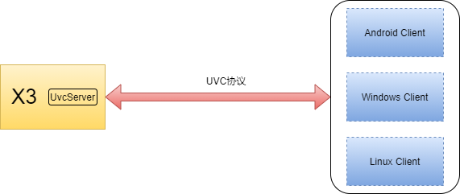

一、uvc协议¶
UVC全称为USB Video Class，USB视频类，是一种为USB视频捕获设备定义的协议标准，属于USB行业规范中的USB设备类规范，用于USB接口的视频设备的一个统一的数据交换规范。是Microsoft与另外几家设备厂商联合推出的为USB视频捕获设备定义的协议标准，已成为USB org标准之一。
二、uvc server¶
uvc server基于uvc协议发送视频数据到客户端，uvc server负责协议的数据交换和编码信息传输。 
uvc server运行在X3上，X3和各个Client间使用USB线物理连接
任何支持UVC协议的设备，都可以通过UVC协议拉取X3上的视频流，比如Android、Windows、Linux等
三、编译&示例运行¶
编译¶
mkdir build & cd build & cmake .. & make & make install & cd ../output/uvc_server
编译产物路径如下:
.
└── uvc_server
├── include
│ └── uvc_server
│ └── uvc_server.h
└── lib
└── libuvc_server.so
这里提供了头文件和依赖库，工程拷贝到指定目录后可直接引用。
示例运行：¶
参考：sample/01_transfer_nv12目录下的文档说明
四、开发接口说明¶
本章节介绍uvc server的接口功能及使用说明。
接口使用说明¶
typedef enum {
CODEC_NV12 = 0,
CODEC_MJPEG = 1,
CODEC_H265 = 2,
CODEC_H264 = 3,
} codec_type;
enum UvcEvent {
UVC_EVENT_NONE = 0,
UVC_STREAM_OFF = 1, // 视频流关闭
UVC_STREAM_ON, // 视频流开启，传入width/height/video_type
UVC_ADD, // uvc设备接入
UVC_REMOVE, // uvc设备
UVC_EVENT_MAX
};
class UvcEventCallback {
public:
virtual void OnUvcEvent(UvcEvent event_type, void *data, int data_len) = 0;
};
struct UvcVideoData {
int width_; // 视频宽度, stream on/off时会左右参数导出
int height_; // 视频高度
codec_type video_type_; // 视频编码类型
char *v_buffer_; // 图像buffer地址
int v_size_; // 大小
};
struct StreamParams {
int width_; // 视频宽度, stream on/off时会左右参数导出
int height_; // 视频高度
codec_type video_type_; // 视频编码类型
};
struct UvcEventData {
UvcEvent event_type_;
StreamParams params_;
};
typedef enum {
VENC_INVALID = 0,
VENC_H264,
VENC_H265,
VENC_MJPEG,
} venc_type;
class UvcServer {
public:
UvcServer();
~UvcServer();
int Init(UvcEventCallback *call_back);
/**
* @brief distory resource
* @return 0: ok, -1: fail
*/
int DeInit();
/**
* @brief start
* @return 0: ok, -1: fail
*/
int Start();
/**
* @brief stop
* @return 0: ok, -1: fail
*/
int Stop();
/**
* @brief send video data to uvc
* @UvcVideoData video data
* @bool uvc manager video data buffer,The caller does not need to be
* concerned with memory release issues, default true.
* @return 0: ok, -1: fail
*/
int SendFrame(UvcVideoData &data, bool uvc_manager_buf = true);
/**
* @brief return UvcServer Instance
* @return
*/
static std::shared_ptr<UvcServer> GetInstance();
static bool IsUvcStreamOn() {
std::lock_guard<std::mutex> lg(mutex_);
return uvc_stream_on_ == 1;
}
static void SetUvcStreamOn(int on) {
std::lock_guard<std::mutex> lg(mutex_);
uvc_stream_on_ = on;
}
private:
static void uvc_streamon_callback(struct uvc_context *ctx, int is_on,
void *userdata);
static int uvc_prepare_frame_callback(struct uvc_context *ctx, void **buf_to,
int *buf_len, void **entity,
void *userdata);
static void uvc_release_frame_callback(struct uvc_context *ctx, void **entity,
void *userdata);
static codec_type fcc_to_video_format(unsigned int fcc);
int uvc_init_with_params(venc_type type, int vechn, int width, int height);
void UvcEventProc();
void Dwc3UeventMonitor();
private:
static int uvc_stream_on_;
static std::mutex mutex_;
static struct uvc_context *uvc_ctx_;
static RingQueue<UvcVideoData> video_queue_;
static RingQueue<UvcEventData> uvc_event_queue_;
static std::mutex uvc_instance_mutex_;
static std::shared_ptr<UvcServer> uvc_instance_;
private:
UvcEventCallback *uvc_event_call_back_; // 用于传出event信息
int width_;
int height_;
venc_type vtype_;
std::shared_ptr<std::thread> event_thread_;
std::shared_ptr<std::thread> dwc3_thread_;
bool stop_;
};
1、codec_type：定义uvc server内部的编码类型，对应x3编码的编码类型，uvc协议的请求编码类型需要转换，参考fcc_to_video_format实现
CODEC_NV12：nv12编码格式
CODEC_MJPEG：mjpeg编码格式
CODEC_H265：h265编码格式
CODEC_H264：h264编码格式
2、UvcEvent：定义了uvc server支持的事件类型
UVC_STREAM_OFF：视频流关闭事件
UVC_STREAM_ON：视频流开启事件，附加数据是请求视频流参数信息，数据结构为UvcEventData
UVC_ADD：UVC设备插入事件
UVC_REMOVE：UVC设备拔出事件
3、UvcEventCallback::OnUvcEvent：uvc事件回调接口，用户类需要实现此接口并再初始化时把接口指针传给uvc server，后续uvc事件通过此接口回调给用户类，主要参数如下：
event_type：事件类型，参考UvcEvent说明
data：指针，回调附加数据，比如编码信息
data_len：附加数据长度
4、UvcVideoData：此结构在SendFrame接口中用到，由用户填充数据
width_：发送的视频图像宽度，需要与请求的宽度一致
height_：视频图像高度，同上
video_type_：视频图像编码类型，比如nv12、h264等，需要与请求的视频编码类型一致
v_buffer_：视频图像数据存放地址
v_size_：视频图像数据大小
5、StreamParams：此结构体用于存放Client请求视频图像的编码等信息
width_：Client请求视频图像宽度
height_：Client请求视频图像高度
video_type_：Client请求视频图像编码类型
6、UvcEventData：uvc_server消息载体，包括视频消息和热插拔消息
event_type_：消息类型
params_：消息附加数据，参考
StreamParams说明
7、venc_type：uvc协议定义的编码消息类型
8、UvcServer：uvc server主要功能类
Init：初始化uvc，发送视频数据前必须先初始化
DeInit：反初始化
SendFrame：发送视频帧数据，uvc server通过uvc协议转发给client
UvcVideoData：视频帧数据结构体，用户类发送前填充此结构体传递给uvc server
uvc_manager_buf：默认uvc server管理UvcVideoData中的buffer指针；如果设置为false，uvc申请新的指针并拷贝一份视频数据
Start/Stop：实现为空